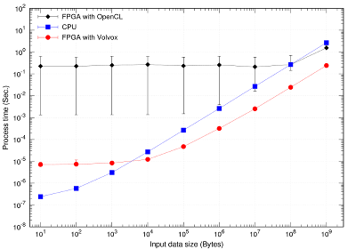
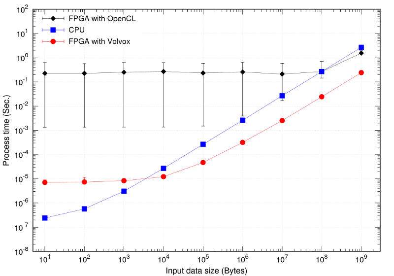

横幅
ミラクル・リナックス (本文の横幅約700px)
LWN (横幅制限なし)
Hadoop (横幅制限なし)
gstreamer (本文の横幅1080px)
Syntax highlight (CSS+JS)
例
Scroll bar (CSS+JS)
例
High resolution picture (HTML)
左：標準解像度、右：高解像度 (Retina Displayや高画素密度のスマホ・タブレットで見ると区別できます)



表 (HTML)
セルの大きさ、背景色、線種など
| 列-A | 列-B |
|---|
| 行-1 | A-1 | B-1 |
|---|
| 行-2 | A-2 | B-2 |
|---|
| 行-3 | A-3 | B-3 |
|---|
| 行-4 | A-4 | B-4 |
|---|
Clickable Map (mapタグ, JS)
例
Yahoo天気
Action on hover (CSS+JS)
例
Example
CSSで提供されるアイコン
例
Bootstrap
Web font (CSS)
例
Example
Web GL (canvasタグ+JS)
例
3Dグラフ